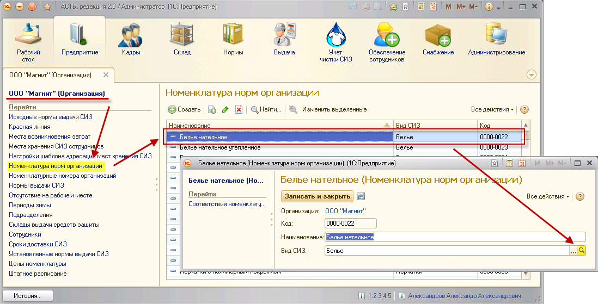
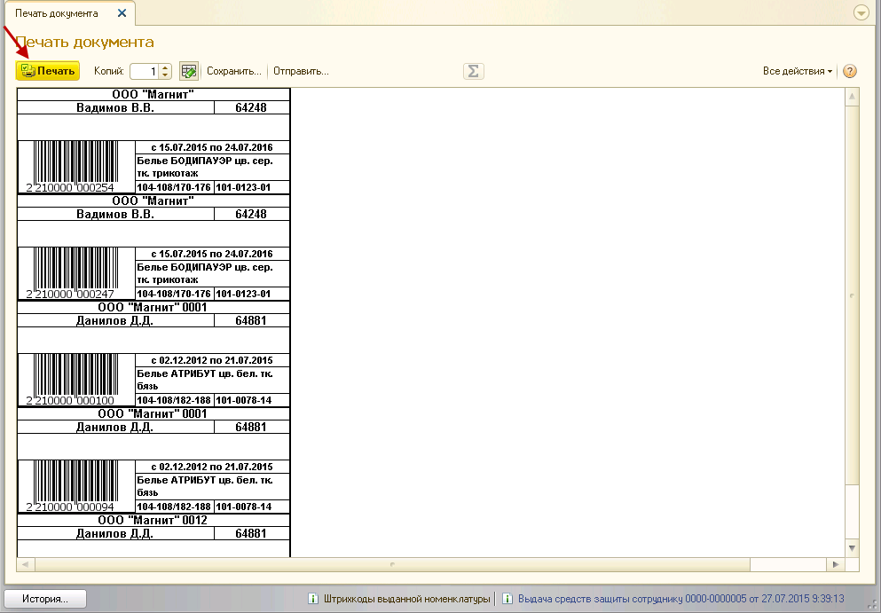
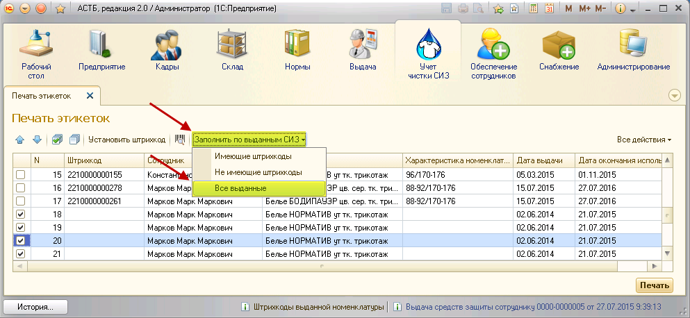

. Далее нажмите на кнопку «Установить штрих код».
. Далее нажмите на кнопку «Установить штрих код».Ниже будет приведена инструкция по настройке и печати этикеток для передачи СИЗ в чистку.
Чтобы сгенерировать штрих код для этикеток, ПК АСТБ использует значение префикса штрих кода номенклатуры, которое должно быть задано на странице организации. Чтобы проверить, указано ли данное значение, зайдите на страницу созданной организации через раздел «Предприятие», справочник «Организации».
Префикс штрих кода должен состоять их трех цифр, на примере ниже – 100.
Далее необходимо определить список видов СИЗ, которые планируется передавать в чистку, и проставить у соответствующего вида СИЗ определенный признак (использование штрих кода). Для этого необходимо зайти в справочник организаций, выбрать созданную фирму и выбрать пункт «Номенклатура норм организации».
В открывшемся справочнике необходимо выбрать номенклатуру нормы, которую планируется отдавать в чистку. Двойным нажатием мыши откройте свойства номенклатуры нормы и в строке «Вид СИЗ» нажмите кнопку .

В открывшемся окне поставьте флажок «Использовать штрих код», укажите вид выдачи СИЗ, а затем сохраните данные, нажав кнопку «Записать и закрыть».
Примечание: признак использования штрих кодов будет применен ко всем наименованиям номенклатуры нормы, которые относятся к выбранному виду СИЗ.
Прежде, чем передать одежду в стирку, необходимо обозначить СИЗ путем штрихкодирования, чтобы при возврате из чистки можно было определить сотрудника, которому принадлежит данный СИЗ. Следовательно, необходимо напечатать этикетку со штрих кодом на каждый СИЗ, который передается в чистку.
В ПК АСТБ 2.0 предусмотрен специальный сервис, позволяющий проводить пакетную установку штрих кодов и печать этикеток. Чтобы им воспользоваться, зайдите в раздел «Учет чистки СИЗ», сервис «Печать этикеток».
Табличная часть открывшегося окна может быть заполнена тремя способами:
· Номенклатурой с присвоенными ранее штрих кодами;
· Номенклатурой, не имеющей штрих кодов;
· Всей выданной ранее номенклатурой.
Прежде всего, следует присвоить значения штрих кодов всей номенклатуре, которую планируется сдавать в чистку. Для этого нажмите кнопку «Заполнить по выданным СИЗ», пункт «Не имеющие штрих коды».
Табличная часть будет заполнена выданной номенклатурой, для которой значения штрих кодов не были установлены ранее (этикетки не были распечатаны).
Примечание: обработка отберет только те средства защиты, для которых был установлен признак «Использовать штрих код».
В окне будут отображены данные по выдаче, включая сотрудника, номенклатуру и ее характеристики, даты выдачи и окончания использования.
Затем нужно выбрать номенклатуру для установки штрих кодов путем проставления флажков. Также можно выбрать всю номенклатуру, нажав на кнопку . Далее нажмите на кнопку «Установить штрих код».
Примечание: в списке могут отражаться загруженные в базу наименования, выданные до использования ПК АСТБ. Рекомендуется устанавливать штрих коды на номенклатуру, представленную в документах «Установка соответствий номенклатуры выдачи» и «Выдача средств защиты сотруднику».
Примечание: если после присвоения штрих кода в документе выдачи необходимо поменять размер, нужно будет заново напечатать этикетку, так как штрих код хранит данные о наименовании СИЗ и его характеристиках.
После этого заполнятся значения штрих кодов для выбранных наименований.
Чтобы распечатать этикетки для СИЗ с установленными штрих кодами, нажмите на кнопку «Заполнить по выданным СИЗ», пункт «Имеющие штрих коды».
Табличная часть будет заполнена всеми выданными товарами с установленными штрих кодами. Отметьте флажками те наименования, для которых нужно распечатать этикетки. Затем нажмите кнопку «Печать».
Примечание: штрих код является уникальным значением, заданным для одного изделия. Если сотруднику было выдано несколько одинаковых СИЗ, для них будут сформированы разные штрих коды. Во время печати этикеток необходимо выбирать тот штрих код, который был присвоен данной номенклатуре изначально, чтобы в дальнейшем не было ошибок при формировании документов в АСТБ.
Откроется печатная форма этикеток для всех выбранных позиций, снова нажмите «Печать».

Примечание: чтобы напечатать этикетки на комплектующие костюмов и т.п. (где есть несколько составляющих для стирки, и штрих код необходимо наклеить на каждую позицию), в свойствах номенклатуры выдачи нужно указать составляющие этого комплекта.
Табличная часть может быть заполнена всеми выданными ранее СИЗ. Для этого нажмите кнопку «Заполнить по выданным СИЗ», пункт «Все выданные».

После этого табличная часть заполнится всеми выданными ранее СИЗ без учета наличия штрих кодов.
Из представленных данных можно увидеть, для каких СИЗ не были распечатаны этикетки, установить для них штрих коды и, при необходимости, распечатать этикетки.
В незаполненной табличной части может быть произведен поиск по установленному штрих коду. Для этого нажмите на кнопку  , введите значение штрих кода в открывшемся окне и нажмите кнопку «ОК».
, введите значение штрих кода в открывшемся окне и нажмите кнопку «ОК».
В табличной части появится соответствующая штрих коду номенклатура для дальнейшей печати этикетки.
Этикетки также могут быть напечатаны на основании документа выдачи СИЗ.
Примечание: если после присвоения штрих кода в документе выдачи необходимо поменять размер, нужно будет заново напечатать этикетку, так как штрих код хранит данные о наименовании СИЗ и его характеристиках.
В документе выдачи нажмите кнопку «Этикетки».
В открывшемся окне выберите СИЗ, для которых необходимо установить штрих код (если он не установлен). Для этого проставьте флажки напротив нужных СИЗ и нажмите кнопку «Установить штрих код».
Для выбранных позиций автоматически установятся значения штрих кодов. Нажмите кнопку «Печать».
Примечание: штрих код является уникальным значением, заданным для одного изделия. Если сотруднику было выдано несколько одинаковых СИЗ, для них будут сформированы разные штрих коды. Во время печати этикеток необходимо выбирать тот штрих код, который был присвоен данной номенклатуре изначально, чтобы в дальнейшем не было ошибок при формировании документов в АСТБ.
Откроется печатная форма этикеток для всех выбранных позиций, снова нажмите «Печать».
Примечание: чтобы напечатать этикетки на комплектующие костюмов и т.п. (где есть несколько составляющих для стирки, и штрих код необходимо наклеить на каждую позицию), в свойствах номенклатуры выдачи нужно указать составляющие этого комплекта.
Для печати этикеток на выданные ранее СИЗ зайдите в карточку сотрудника (раздел «Кадры», справочник «Сотрудники»). Откроется карточка сотрудника. Нажмите на кнопку «Этикетки».
В открывшемся окне выберите СИЗ, для которых необходимо установить штрих код (если он не установлен). Для этого проставьте флажки напротив нужных СИЗ и нажмите кнопку «Установить штрих код».
Для выбранных позиций автоматически установятся значения штрих кодов. Нажмите кнопку «Печать».
Примечание: штрих код является уникальным значением, заданным для одного изделия. Если сотруднику было выдано несколько одинаковых СИЗ, для них будут сформированы разные штрих коды. Во время печати этикеток необходимо выбирать тот штрих код, который был присвоен данной номенклатуре изначально, чтобы в дальнейшем не было ошибок при формировании документов в АСТБ.
Откроется печатная форма этикеток для всех выбранных позиций, снова нажмите «Печать».
Примечание: чтобы напечатать этикетки на комплектующие костюмов и т.п. (где есть несколько составляющих для стирки, и штрих код необходимо наклеить на каждую позицию), в свойствах номенклатуры выдачи нужно указать составляющие этого комплекта.